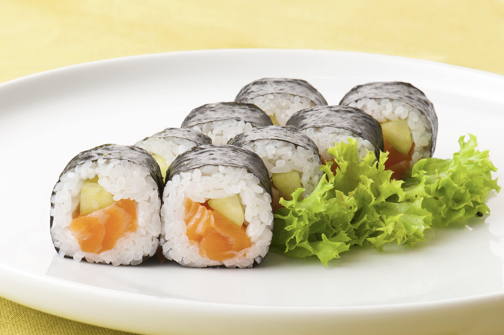

Norimaki Recipe

Description
Fresh tasting salmon and cucumber norimaki. Healthy and delicious!
Ingredients
- sushi rice
- sushi-grade salmon
- salt
- cucumber
- nori
- nori bamboo roller
- water
- sushi vinegar
Steps
- Cook rice.
- Season rice with vinegar and salt.
- Roll maki.
- NOM.